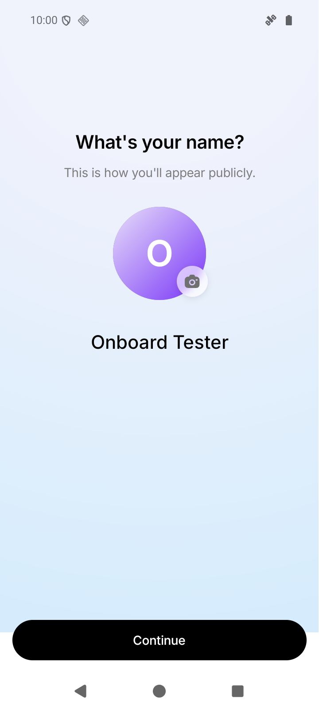
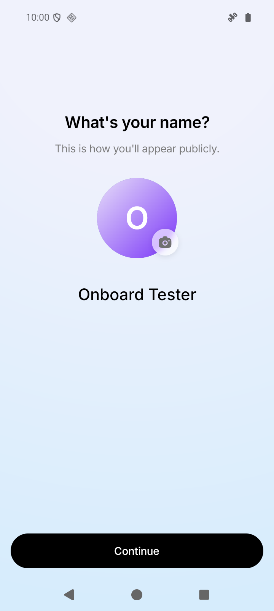
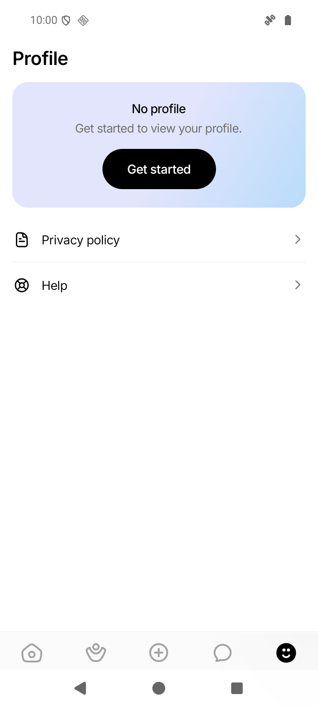

Fix onboarding.
Preserve the other pages.
The background fills the onboarding page. Android's system-bar shading is removed only while onboarding is visible, and restored when you leave.
Download signed APK · 1.0.2Release built before this report · source 2e0a38e · Android build 5
1. Onboarding: white cutoff removed
Both captures use the same controlled window-size mismatch. The blue background now continues below Continue and behind the system buttons.




2. Profile: original appearance preserved
The entire 720 × 1600 comparison has 0 changed pixels, including the system-navigation area. The baseline is the original appearance before global transparency, not the earlier 1.0.1 test APK.



Verification and test instructions
131 suites / 1,509 tests passed. Signature verified. Upgrade from the prior APK passed.
These are unedited Android 16 emulator screenshots. The onboarding pair uses the original renderer and fixed renderer with the same simulated shorter window; that diagnostic was removed before the release. The Profile pair verifies restoration after onboarding. The signed APK uses the same committed source; onboarding in that APK still needs your device/account test.
Use a new test account or incomplete onboarding. Check all three pages, keyboard dismissal, restart, and both navigation modes, then check Profile. Keep issue #167 open until the affected phone passes.
Detailed evidence and reproduction · EAS build record
APK SHA-25651b264d9cc3571fe7f5dc2eee4bd3fb309ab4f07286faf11ea1da452ea93b7e5